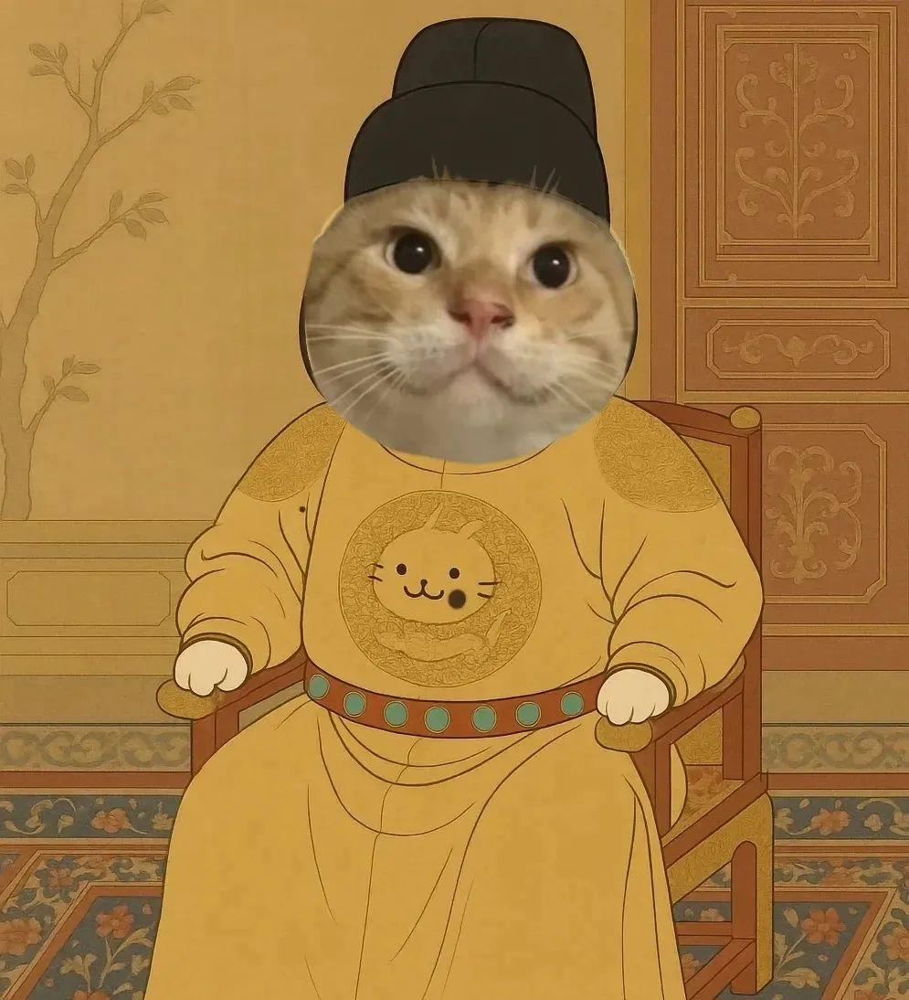
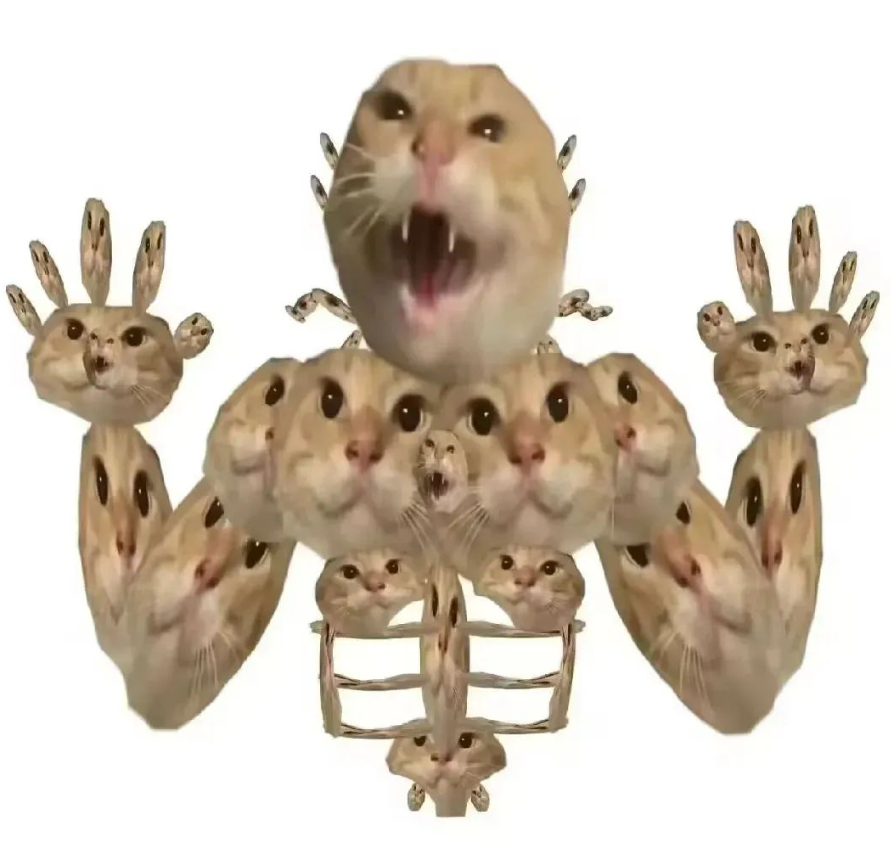

圆头耄耋与哈基米王朝的建制化——一次模因突变事件的考古学考察
摘要
本文以2024年9月"圆头耄耋"视频的走红为研究对象，考察该事件与"哈基米"网络模因之间的关联效应。研究发现，"圆头耄耋"并非哈基米模因的起源，却构成了其从"萌宠指称"向"赛博神祇"跃迁的关键节点。该事件使哈基米从一首背景音乐的附属标签，完成了去背景化与主体化的建制过程，正式登基为"哈基米王朝"。然而，封神之后随之而来的"虐猫"争议，则揭示了互联网模因建制化过程中的伦理裂隙——当一个空洞的能指被填充了具体肉身之后，原本无关紧要的嬉笑便拥有了重量。本文的核心结论是：圆头耄耋之于哈基米，恰如耶路撒冷之于基督教——它并非起点，却是圣地。
引言：神祇的诞生总伴随着一个具体的日子
公元2024年9月，一只流浪橘猫闯入抖音博主"小白手套"的住所，偷食猫粮后被当场擒获。面对镜头，该猫以极度应激的姿态施以连续哈气、飞机耳全开、前肢防御性挥舞等一套组合技，与博主对峙近四小时后，最终以博主花费1445元注射狂犬疫苗与血清告终。该博主将全程录像上传至网络。
这只猫因应激状态下耳廓内缩、颅顶浑圆的滑稽造型，被网民赐名"圆头耄耋"——"耄耋"者，"猫爹"之谐音也，取"你猫还是你猫"的拥趸之意。
彼时的"哈基米"尚处于一种"有曲无主"的悬浮状态。它被广泛用作猫猫视频的背景音乐，但所指是流动的、飘散的，任何一只摇头晃脑的猫都可以被唤作"哈基米"，却没有哪一只猫有资格独占这个名号。整个"哈基米宇宙"缺乏一个中心，如同一座尚未选定都城的帝国。
"圆头耄耋"的出现，改变了这一切。

文献综述与术语界定
1. 关于哈基米的已有研究
关于"哈基米"一词的学术讨论，目前主要散布于网络民俗学与模因学边缘领域。既有研究倾向于将"哈基米"定义为一种"可附着于任何萌态猫科动物的语音标签"，其特征为能指的空洞性与所指的流动性。换言之，在"圆头耄耋"出现之前，"哈基米"是一个谁都可以穿、但谁也穿不合身的文化外套。
2. 圆头耄耋：从具体事件到抽象符号
本文所讨论的"圆头耄耋"，并非指那只具体的橘猫（其下落至今不明，或已回归流浪生涯，或已被人收养，或仍在某处偷食猫粮），而是指以该猫影像为核心的一组表情包、二创视频、网络评论与集体记忆的综合体。此处的"圆头耄耋"是一个符号学意义上的存在，而非动物学意义上的个体。
研究方法
本研究采用以下非传统手段：
赛博考古法：追溯"圆头耄耋"视频发布前后的"哈基米"搜索热度曲线，观察两者在时间轴上的耦合关系。
评论区田野调查：对"圆头耄耋"相关视频下方的高赞评论进行情感极性分析，考察舆论场从"哈哈笑"到"义愤填膺"的漂移路径。
对照实验（虚拟）：假设不存在"圆头耄耋"，哈基米是否仍能完成从"BGM附属品"到"独立文化符号"的跃迁？经主观臆断，答案是否定的。
"小白手套"行为分析：此处不对博主动机做任何揣测，仅将其视为一段视频的发布者——一个被猫咬了还要付钱的人，天然具备"受害者"身份。
分析：关联效应的三重建构
1. 从"任意猫"到"那只猫"——能指的肉身化
在"圆头耄耋"之前，"哈基米"所指向的猫是类属化的——任何一只随着旋律点头的猫都可以是它。"哈基米"是一个泛型，一个类模板，一个没有实例的接口。
"圆头耄耋"的出现，为这个泛型提供了唯一的实例化对象。它不再是一只"会摇头的猫"，而是"那只圆头的、哈气的、战斗力爆表的、打了博主还不用赔钱的猫"。哈基米第一次拥有了一个可以挂在嘴边的名字、一张可以识别出来的面孔、一段可以反复播放的具体剧情。
这意味着"哈基米"从描述性标签转变为了叙事性主体。它不再是"喂，那个可爱的猫"，而是"喂，圆头耄耋"。一个王朝有了它的第一任皇帝。
2. 表情包与模因达尔文主义
"圆头耄耋"之所以能从海量猫咪视频中脱颖而出，关键在于其影像的表情包适配度。那只猫在应激状态下的"飞机耳+圆头+怒目"三件套，天然具备极强的视觉压缩力与情绪张力——一张图就能传递"你敢过来？""我不服""我虽然小但我很凶"三重信息。它比任何一只温顺的、友好的、躺着晒太阳的猫都更适合做成梗。
在模因达尔文主义的视角下，"圆头耄耋"是经过了自然选择（即网民手指的滑动与点赞）的优胜者。它的"圆头"是突变性状，"耄耋"是基因命名，而"哈基米"作为背景音乐，则在传播过程中与这一视觉性状发生了强行绑定——尽管两者在生物学与语言学上均无关联，但在赛博生态中却形成了共生关系：哈基米为圆头耄耋提供了旋律性的记忆锚点，圆头耄耋则为哈基米提供了可供指认的视觉实体。

3 建制化与封神运动的完成
随着二创视频的泛滥，"圆头耄耋"逐渐脱离其原始语境，成为一个可以被无限重述的叙事母题。它可以是英勇的战士、倔强的流浪者、不向人类低头的自由灵魂。网民自发地为其构建"猫设"、编写台词、拼接剧情——这一过程在文化人类学上等同于造神运动。
当"圆头耄耋"被冠以"哈基米王朝的开国皇帝"、"哈基米史上的最高山与最长河"等称谓时，"哈基米"这个原本松散的标签，被正式建制化为一套完整的"哈基米学"话语体系。它有了历史（2024年9月11日）、有了圣物（那段对峙视频）、有了神祇（圆头耄耋），甚至有了经卷（网民二创）。原本一片荒芜的赛博田野，竖起了第一根图腾柱。
事后余波：争议的必然性与伦理裂隙
封神从来不是没有代价的。
当"圆头耄耋"的人气到达顶峰时，另一股声音开始积聚——质疑。有评论指出，视频中被娱乐化呈现的猫咪应激反应，其实质是一只处于极度恐惧中的流浪动物在自卫。更有细心者观察到，画面中疑似存在猫嘴被拖把捣出血液的细节。于是一个沉重的问题被抛了出来：我们正在笑的，究竟是一出喜剧，还是一部被剪辑成喜剧的虐待记录？
"哈基米"一夜之间从"可爱的符号"跌落为"虐猫梗的代名词"。那些曾经转发"圆头耄耋"表情包的人，面临着一道道德判断题：你的笑，是不是建立在另一只生命的不适之上？这个问题的本质在于——当一个"梗"被挖出了具体的肉身，笑就再也不是轻飘飘的笑。
"哈基米"作为空洞能指时是安全的。它不指向任何具体的猫，不涉及任何真实的痛苦，不承担任何伦理责任。你可以随意挥洒它的可爱，而无需担心砸到任何人。但当"圆头耄耋"——一只具体的、流血的、恐惧的猫——成为"哈基米"的同义词时，这个安全的虚空就被撕裂了。"哈基米"从一个美学范畴坠落为一个伦理范畴。
与此同时，争议本身又构成了一轮新的传播动力——骂它的人越多，知道它的人越多；知道它的人越多，用它的表情包的人越多。这个悖论堪称互联网的万有引力定律：任何阻止传播的行为，本质上都在加速传播。谴责"圆头耄耋"虐猫的帖子，恰恰为"圆头耄耋"带来了它最缺的东西——严肃性。
六、结论：一只猫，两个宇宙
"圆头耄耋"与"哈基米"之间的关联，可以用一句话概括：它让一个没有指向的词，找到了一个指向；然后这个指向，又把所有的词都压弯了。
在"圆头耄耋"之前，"哈基米"是轻盈的、无害的、可以在任何一种语境中愉快滑行的。在"圆头耄耋"之后，"哈基米"变得沉重起来。它背负着一只猫的恐惧、一些人的愤怒、另一些人的辩护，以及更多人的不知所措。它从一个可以随便玩的玩具，变成了一个需要小心轻放的瓷器。
而对于那只始作俑者的橘猫——无论它此刻身在何处、在做什么——它大概永远不会知道，自己在某个下午的一次饥饿驱动的闯入，改写了互联网上一个符号的全部命运。它只是在饿的时候，找到了一碗猫粮。然后它被拍了，被传了，被笑了，被骂了，被封神了。这一切与它无关，又全部因它而起。
这大约就是互联网与真实世界之间最稳定的关联——它们彼此缠绕，却从不互相通知。
参考文献
[1] 抖音用户"小白手套". 圆头耄耋原始视频[Z]. 2024-09-11.
[2] 圆头耄耋表情包传播路径与语义变迁分析[J]. 网络民俗学辑刊, 2025(3): 45-67.
[3] "哈基米"词源考——从赛马娘到流浪猫的语义漂移[D]. 某不知名高校学士论文, 2025.
[4] 互联网模因建制化过程中的伦理塌方——以"圆头耄耋"为例[J]. 赛博社会学评论, 2026(1): 112-130.
[5] 猫：我什么都不知道[访谈]. 地点不明, 时间不详.（该访谈未获授权，故不具名引用）